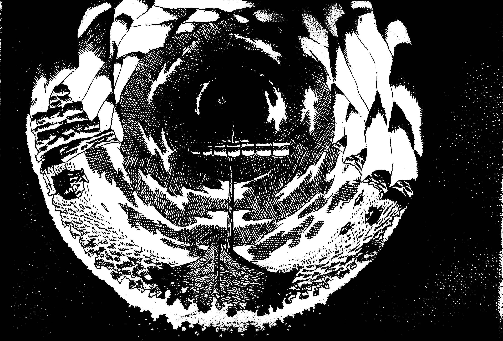
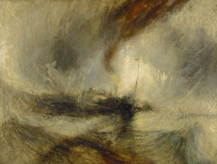

Robin Hood's Bay
Every time, just like the last
On her ship, tied to the mast
-The Stranglers, Golden Brown

The idea behind this page was that, Ulysses,
Robin Hood, and I think also Dionysus
were all tied to the masts of ships. Ulysses did so, so that he could
hear
the song of the sirens, which would otherwise have compelled him to
leap overboard and swim to certain death. Robin Hood asked to be
tied to the mast of a fishing boat when it was attacked by French
pirates in Robin Hood's Bay, so that he could use his bow and arrow
(This story takes place in winter. Most other Robin Hood stories
seem to take place in May.)
Dionysus was imprisoned by pirates. This all suggests
a kind of crucifiction to me.
I think the Stranglers are referring to the Ulysses myth. The song
is about heroin, a deadly inspiration.
This is interesting enough, but then I discovered that the painter
Turner had (aged 60 something) tied himself to the mast of a
ship to produce a painting (Snowstorm - steam boat off a harbours
mouth, below) which I feel has something in common
with mine (apart from being far better of course).
The bbc website states that:
"Looking at this painting, the viewer feels
disoriented and off balance. Turner attempts to
create the sensation of a storm by drawing us in to the centre of a
whirlpool of sky, sea and cloud to find a dark steamboat, its frail
mast bent by the winds. Turner added to the title the statement
‘The author was in this storm the night the Ariel left Harwich’
and he apparently later claimed to have been lashed to the boat’s
mast, but we do not know if either claim was true. The violent and
almost abstract treatment of the paint disturbed some critics one
of whom described it as 'soapsuds and whitewash'.


Back to Pictures
Back to Index